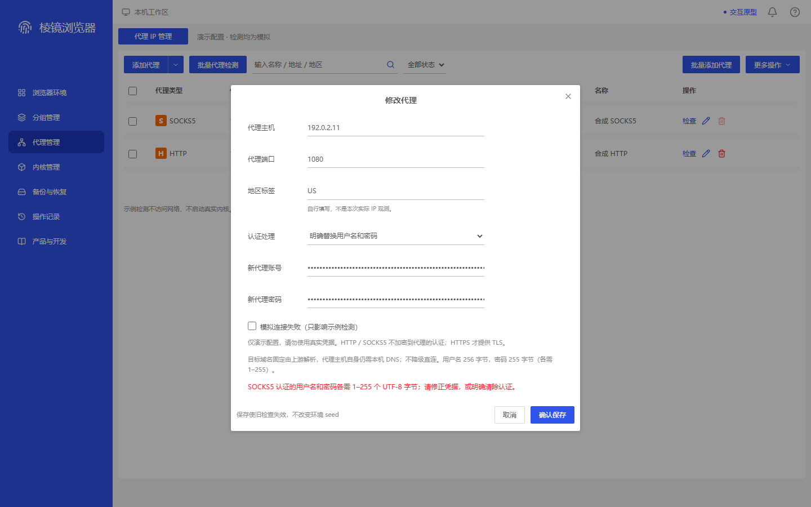
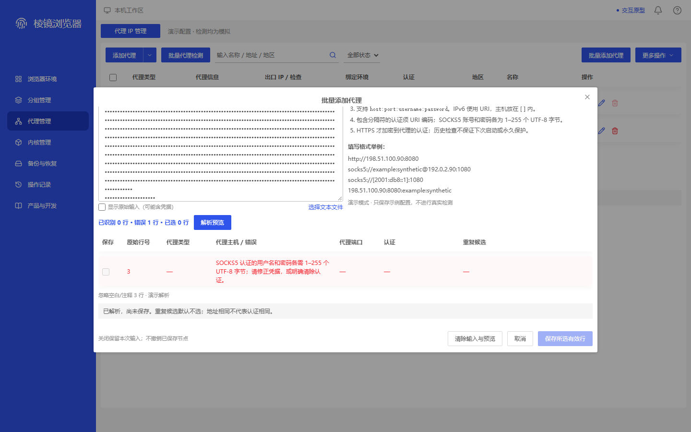
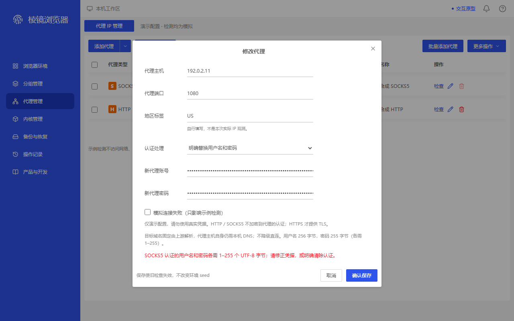
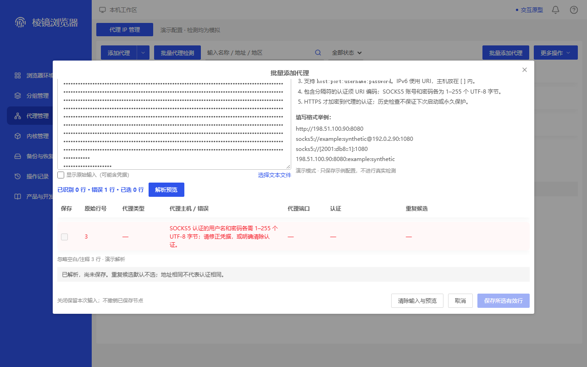

所列合成状态的有限补证；ADAPTED/MAPPED不是严格同业务1:1通过，MISSING/FAIL保留。旧来源、失败、274/47和正式4/21不回写；不代表真实桌面验收。
proxy-byte-frontier-demo-edit-256-utf8 · 1440×900
MAPPED — Opened actual pixels: title, host/port/region, replacement selector, account/password labels and both masked inputs, complete red byte-limit alert, footer note and both footer buttons are visible without target clipping. Body is scrolled to the error frontier; name/protocol fields are off-screen, not certified visible. Actual modal is 620x614 at (410,151); saved body scrollTop is 113. Opened original is the taller commercial-settings editor without this byte-error business state. Only the editor container is mapped; security/local-product adaptations are not strict 1:1.
映射容器 proxy-edit；不代表同业务原参考已找到。

66d3427b521471218394a2face7a084dac4165803e11e44185ab37de51d4ff5b
proxy-byte-frontier-demo-import-decoded-256-utf8 · 1440×900
MAPPED — Opened actual pixels: raw input is bullet-masked, raw-display checkbox unchecked, counter reads 0 valid/1 error/0 selected, original row 3 and its complete wrapping byte-limit message are readable. Target row, parsed-unsaved status, ignored-comment/blank count, footer note and all three footer controls fit. Pale save/row-checkbox appearance is not substituted for saved disabled-state authority. Actual modal is 1050x552 at (195,182); saved body scrollTop is 94. Textarea heading/top and help heading/items 1-2 are off-screen. Fixed help examples are not entered userinfo. Opened original is a generic invalid-input empty-preview/toast container, not this decoded-byte business state.
映射容器 proxy-import-error；不代表同业务原参考已找到。

71696929f7497caa78e1da35ffd377784eeb63c3156fbb94ed6cf9c3c8e335de
proxy-byte-frontier-demo-edit-256-utf8 · 1280×800
MAPPED — Opened actual pixels at the smaller viewport retain the complete byte-limit alert, both bullet-masked replacement inputs with labels, authentication selector and security explanation. Footer note, cancel and confirm-save are fully visible. Actual modal is 620x614 at (330,101); saved body scrollTop is 113. Name/protocol fields above the host row are not certified visible. Opened original preserves the taller editor container and different commercial form, with no direct byte-limit-refusal state. No strict PASS is inferred from container correspondence.
映射容器 proxy-edit；不代表同业务原参考已找到。

222df6cfbb18a43fb575278d61e6fedda533b74f8cb842e5d2321feddff7d56b
proxy-byte-frontier-demo-import-decoded-256-utf8 · 1280×800
MAPPED — Opened actual smaller-viewport pixels show the masked textarea, 0 valid/1 error/0 selected counter, original row 3, complete wrapping red byte-limit message and configuration/authentication/duplicate placeholders. The ignored-line/status region, footer note and all three footer controls remain inside the image with no targeted clipping. Actual modal is 1050x552 at (115,132); saved body scrollTop is 94. Textarea heading/top and help items 1-2 are off-screen. Opened original is the generic invalid-input/empty-preview container; no direct decoded-byte reference or native authority is borrowed.
映射容器 proxy-import-error；不代表同业务原参考已找到。

6765ae6bdbd60e960f92fb2e55703ac36e6ee4549f25f8a7dff4f044e0cb7edb